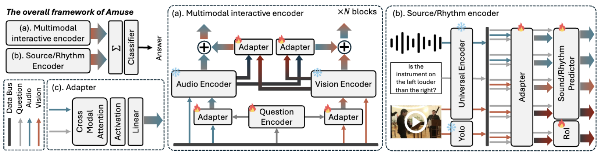
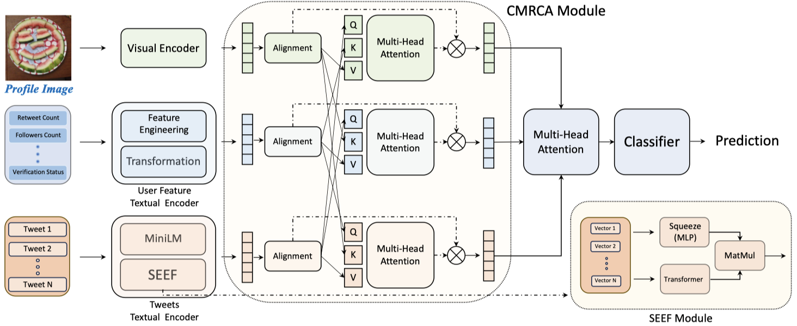

About Me
I am currently a senior undergraduate student at London School of Economics and Political Science, University of London. I have research experience spanning a wide range of topics within the field of machine learning, focusing on computer vision, natural language processing and computational science.
During my study, I also have extensive industrial experience working as a 猪猪.
1. Role 1 @Everbright Futures Co., Ltd (06/2023 - 09/2023, Hangzhou, China)
2. Role 2 @Guosen Securities (06/2024 - 07/2024, Hangzhou, China)
* indicates equal contribution
|
 |
Xingjian Diao, Chunhui Zhang, Tingxuan Wu, Ming Cheng, Zhongyu Ouyang, Weiyi Wu, Soroush Vosoughi, Jiang Gui Findings of EMNLP, 2024 CORE Conference Ranking: A* |
|
 |
|
Summer Intern @Everbright FuturesTech Stacks: Python · PyTorch · CUDA · AWS EC2 & S3 · Git Amazon AWS AI Team, Shanghai, China (05/2020 - 11/2020)
|
Summer Intern @Guosen SecuritiesTech Stacks: Python · PyTorch · CUDA · AWS EC2 & S3 · Git Amazon AWS AI Team, Shanghai, China (05/2020 - 11/2020)
|
|
An Android application for wrist-worn devices to detect feeding patterns with low energy consumption and fast inference times. It applied template-based multi-centroid classifier which could provide an end-to-end battery-efficient approach for feeding detection. |
|
|
An inclusive online chat environment for introverted students, utilizing JavaScript, Python, and Google Cloud platform to implement anonymous chatting and user-friendly direct messaging features, aimed at promoting engagement and improving the chat experience for introverted individuals. |